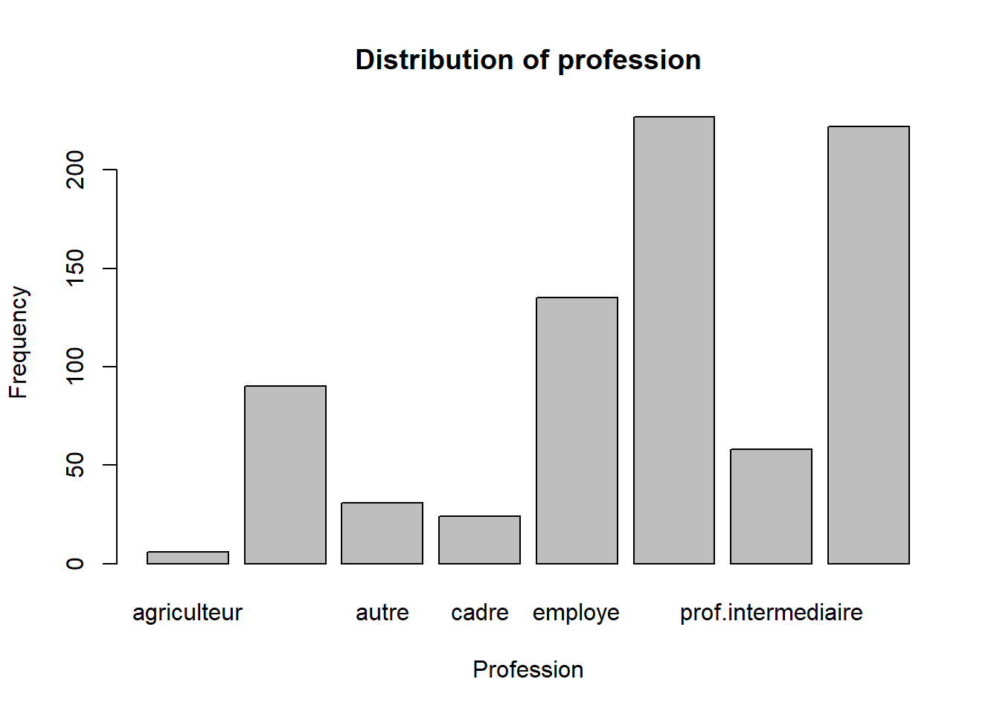
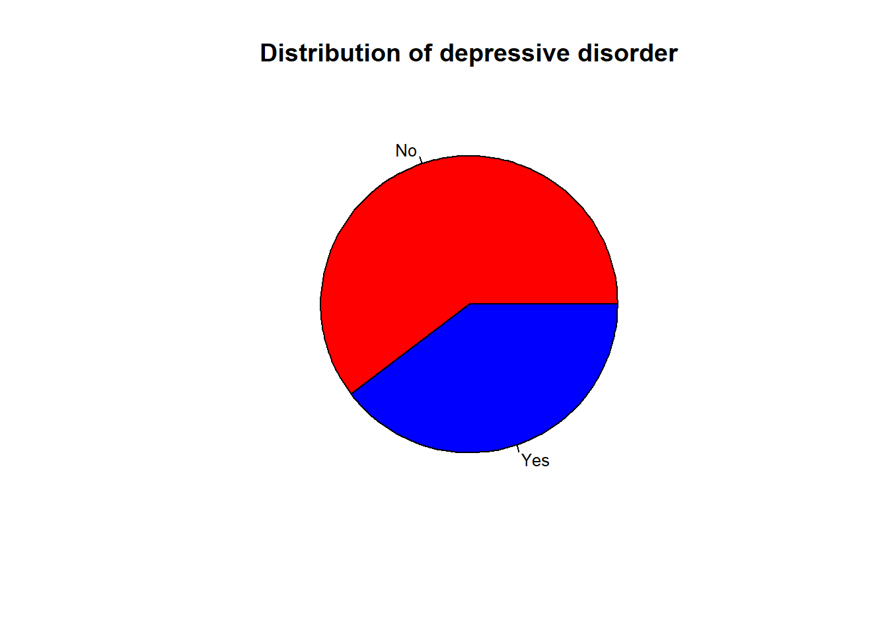
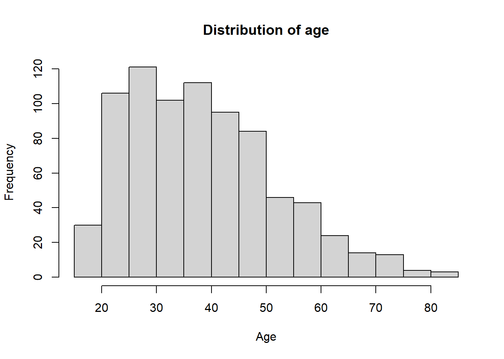
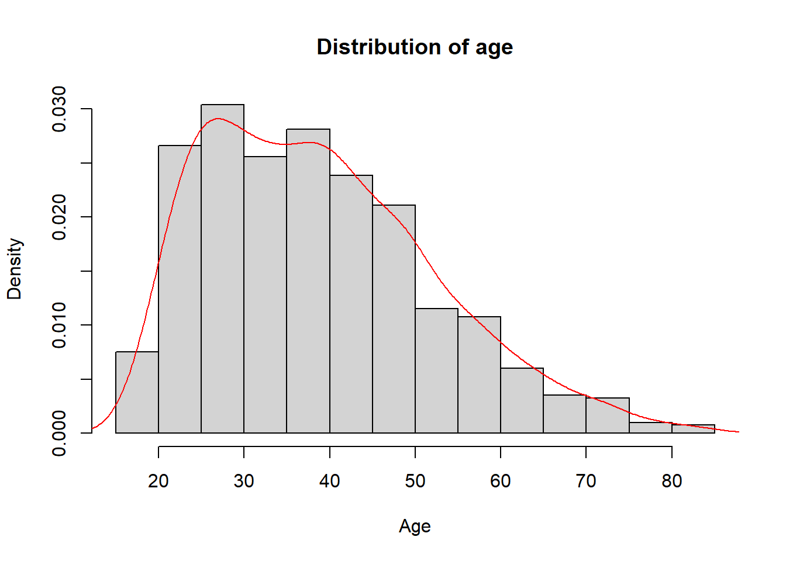
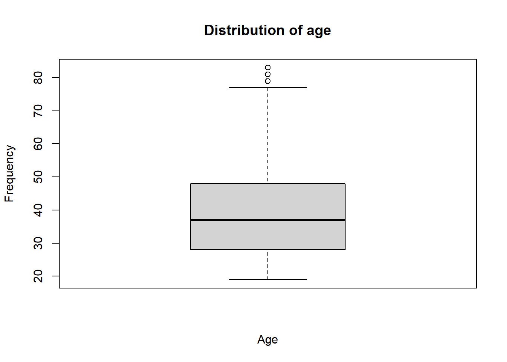
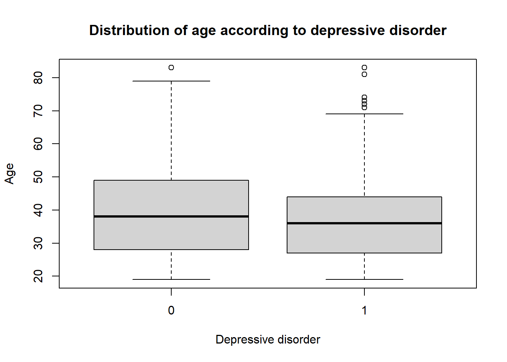
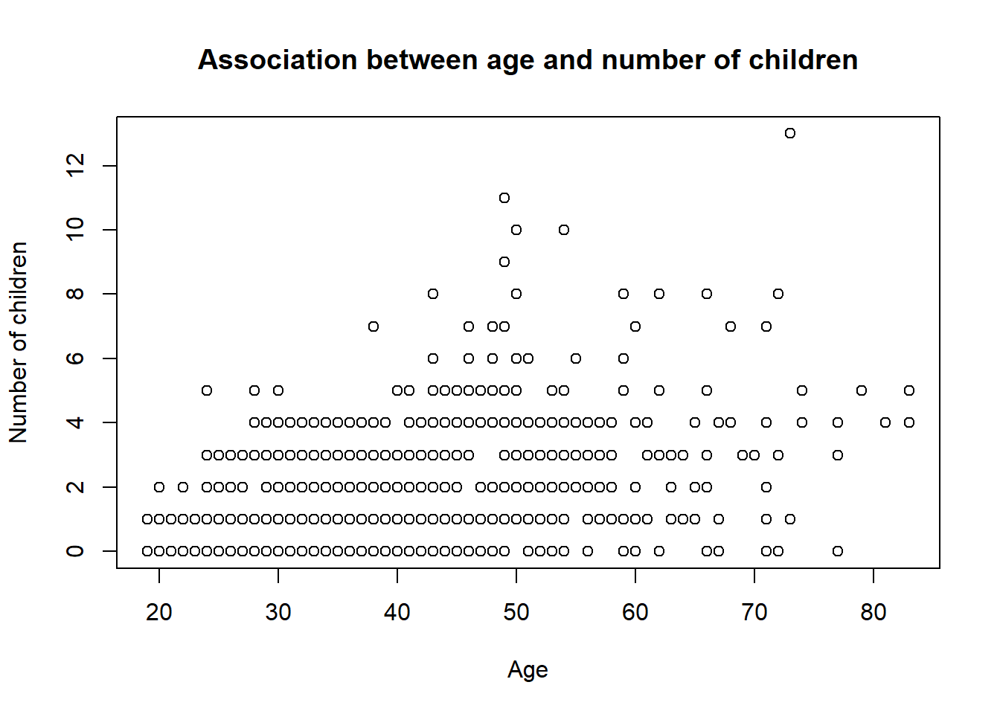
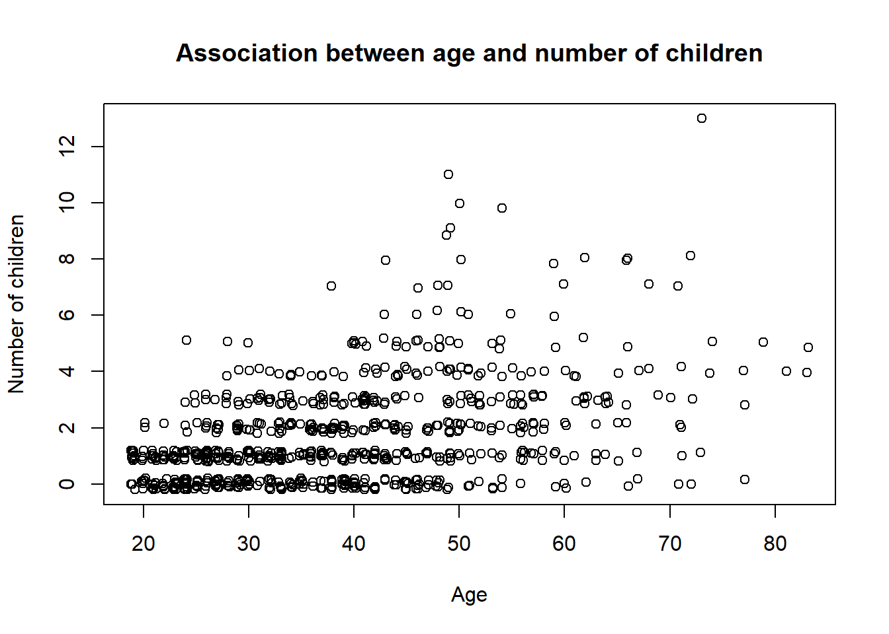
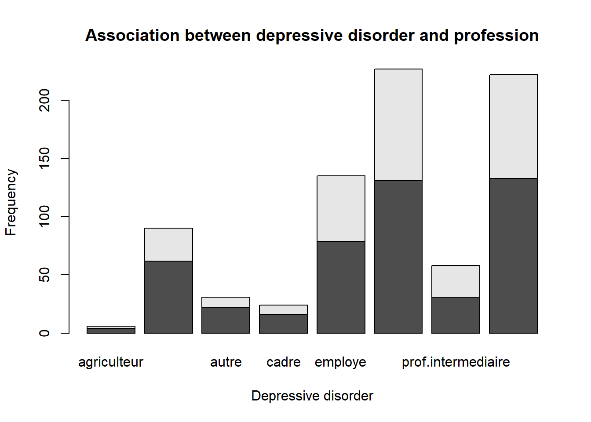
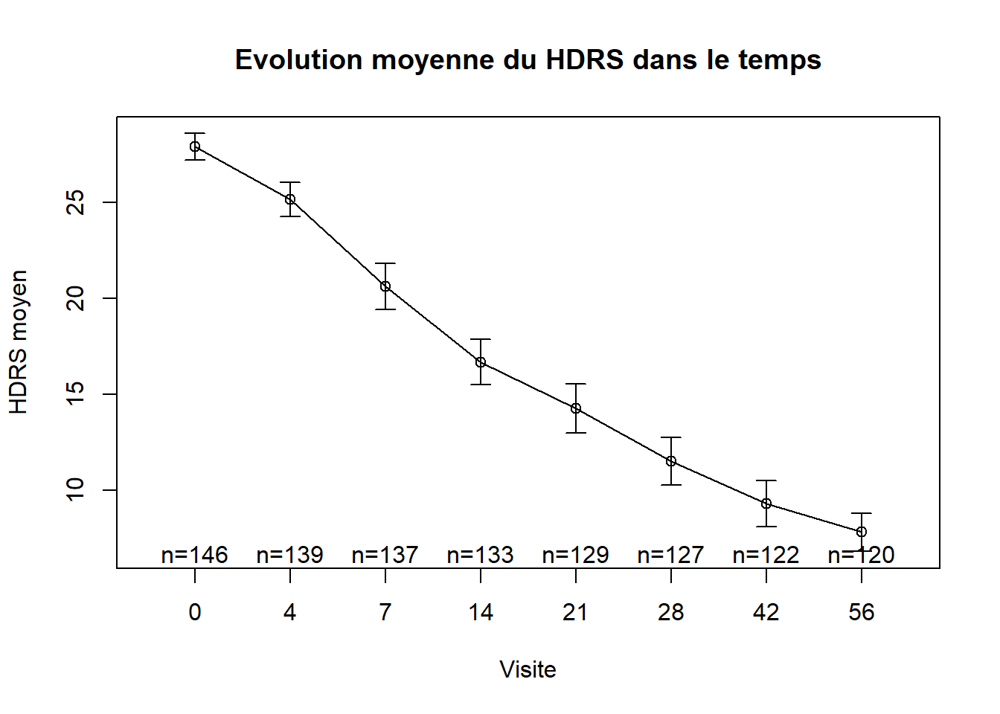

simple tool in R to analyze data : Graph representation, p-value, test, odds ratio, etc.
news
Author
Jumbong Junior
Published
November 16, 2023
1 Introduction
This document is primarily intended for second year students at ENSAI in general, and for those who are particularly interested in biostatistics. When we deal with data, an easy way to understand our work is to create a graph. This gives us an intuition about what we are doing. The advice to follow is to choose simplicity when using graphs and to favor those that everyone knows how to interpret. So when you create a graph, think about your audience and not your personal preferences.
There are also many concerns that we use every day to take decision and we don’t know what they mean. For example the p-value. In this document, we will go through those concepts and explain them in a simple way.
2 Presentation of data.
The data used in this document come from ParisSaclay Introduction à la statistique avec R - Session 21 if the mooc is available when you will read this document. The dataset has 799 observations and 26 variables. One observation represents a prisoner, and variables correspond to the mental health status of the prisoner.
## import library for readcsvlibrary(readr)## import datasetwd("C:/Users/johns/OneDrive/Bureau/code/blog/ensai/posts/ClimateScenario")getwd()
The first thing we want to do is to analyze the distribution of each variable.
3 Distribution of categorical variables: profession.
3.1 Barplot
The graphic tool allow us to represent a distribution of categorical variables is the barplot. Before we built the distribution of variable, we have an amazing tool in our hands to summarize the data. It is the table function. This function allows us to count the number of occurrences of each category in a variable.
## count the number of occurrences of each category in a variabletable(smp2$prof)
agriculteur artisan autre cadre
6 90 31 24
employe ouvrier prof.intermediaire sans emploi
135 227 58 222
The result of the table function is a vector. We can use this vector to create a barplot.
## create a barplotbarplot(table(smp2$prof), main ="Distribution of profession", xlab ="Profession", ylab ="Frequency")

3.2 Pie chart
Another way to represent the distribution of the category variable is the pie chart. The pie chart is a circle divided into sectors. Each sector represents a category of the variable. The size of the sector is proportional to the frequency of the category. Statistics don’t like the pie chart because it is difficult to compare the size of the sectors. However, it is a good way to represent the distribution of a variable when the number of categories is small.
## create a pie chart and put the legend on the right and the percentagepie(table(smp2$dep.cons), main ="Distribution of depressive disorder", col =c("red", "blue"), labels =c("No", "Yes"), cex =0.8)

4 Distribution of numerical variables: age
4.1 Histogram
The histogram is a graphical representation of the distribution of a numerical variable. Unlike barplot, We don’t need to use the table function to create an histogram.
## create an histogramhist(smp2$age, main ="Distribution of age", xlab ="Age", ylab ="Frequency")

We can also plot in the same graphic the density of the variable. The density is the probability of the variable.
## create an histogram with densityhist(smp2$age, main ="Distribution of age", xlab ="Age", ylab ="Density", freq =FALSE)lines(density(smp2$age,na.rm =T), col ="red")

4.2 Boxplot
The boxplot is a graphical representation of the distribution of a numerical variable. The boxplot is composed of a box and two whiskers. The box represents the interquartile range (IQR). The whiskers represent the minimum and maximum values of the variable. The boxplot is a good way to detect outliers in the data.
## create a boxplotboxplot(smp2$age, main ="Distribution of age", xlab ="Age", ylab ="Frequency")

4.3 Association between categorical and numerical variables
The boxplot is a good way to represent the distribution of a numerical variable according to a categorical variable.
## create a boxplotboxplot(smp2$age ~ smp2$dep.cons, main ="Distribution of age according to depressive disorder", xlab ="Depressive disorder", ylab ="Age")

5 Association between two numerical variables
When you deal with two numerical variables.The best way to represent the association between them is the scatter plot.
## create a scatter plotplot(smp2$age, smp2$n.enfant, main ="Association between age and number of children", xlab ="Age", ylab ="Number of children")

As you see in this graphic, it seem like all the points are not represented. This is because the number of point is too large. R have a good function to deal with the problems : jitter. This function add a little noise to the data to avoid the overplotting.
## create a scatter plotplot(jitter(smp2$age), jitter(smp2$n.enfant), main ="Association between age and number of children", xlab ="Age", ylab ="Number of children")

6 Association between two categorical variables
The best way to represent the association between two categorical variables is to use a contingency table. A contingency table displays the frequency or count of observations that fall into each combination of the categories of the two variables. We can use the table of contingency to create a barplot.
## create a contingency tabletable(smp2$dep.cons, smp2$prof)
## create a barplotbarplot(table(smp2$dep.cons, smp2$prof), main ="Association between depressive disorder and profession", xlab ="Depressive disorder", ylab ="Frequency")

7 The link between variable.
7.1 Correlation between two numerical variables
There are many ways to study the correlation between two numerical variables. The most common ways are the Pearson correlation coefficient and the Spearman correlation. The Pearson correlation coefficient is used when the two variables are normally distributed. The Spearman correlation is used when the two variables are not normally distributed. We can not use those tools if Variables have a missing values.
## Pearson correlationcor(smp2$age, smp2$n.enfant, use ="complete.obs")
[1] 0.4326039
## Spearman correlationcor(smp2$age, smp2$n.enfant, method ="spearman", use ="complete.obs")
[1] 0.4243662
8 Temporal evolution of a numerical variable
I will finish by showing how to represent the evolution of the mean of a numerical variable over time. This is very useful In biostatistic When we want to show the evolution of a disease over time. I will use the package gplots to create the graph. You can use ggplot2 to create the same graph. We will use a temporal data outils_hdrs.csv. The data have 3 variables : - NUMERO : the id of the patient - VISIT : the visit of the patient - HDRS : the score of the patient
hdrs <-read_csv2("data/outils_hdrs.csv")
ℹ Using "','" as decimal and "'.'" as grouping mark. Use `read_delim()` for more control.
Rows: 1053 Columns: 3
── Column specification ────────────────────────────────────────────────────────
Delimiter: ";"
dbl (3): NUMERO, VISIT, HDRS
ℹ Use `spec()` to retrieve the full column specification for this data.
ℹ Specify the column types or set `show_col_types = FALSE` to quiet this message.
# install packages#install.packages("gplots") library(gplots) ### Representation of the evolution of the mean of the HDRS score over timeplotmeans(hdrs$HDRS~hdrs$VISIT,gap=0,barcol="black",main="Evolution moyenne du HDRS dans le temps",xlab="Visite",ylab="HDRS moyen")

To compute the same graph with ggplot2, you need to compute the mean, the first quartile and the third quartile of the HDRS score for each visit.
The ggplot(hdrs_mean, aes(x = VISIT, y = mean)) + function creates the graph. The VISIT variable is on the x-axis and the mean variable is on the y-axis.
The geom_point(size = 3) + function creates the points of the graph.
The geom_line(size = 0) + function creates the line of the graph.
The geom_errorbar(aes(ymin=lower, ymax=upper), width=1) + function creates the error bars of the graph.
The scale_x_continuous(expand=c(0,0), breaks=c(0,4,7,14,21,28,42,56)) + function sets the x-axis.
The geom_vline(xintercept = 21, linetype=“dashed”, color = “black”, size=1) + function creates a vertical line at the 21st visit.
The theme_classic() + function sets the theme of the graph.
The theme(axis.line.x = element_line(color=“black”, size = 0.5), axis.line.y = element_line(color=“black”, size = 0.5)) + function sets the color and size of the axis lines.
The theme(axis.text=element_text(size=12, face=“bold”), legend.title=element_blank(), legend.key = element_blank()) + function sets the size and style of the axis text.
The theme(axis.text=element_text(size=12), axis.title=element_text(size=12)) + function sets the size of the axis text.
The xlab(“VISIT”)+ ylab(“The mean score of the patient”) + function sets the labels of the x-axis and y-axis.
The theme(legend.position = c(1,1)) + function sets the position of the legend.
The theme(plot.margin = margin(1, 1, 1, 0.5, “cm”)) + function sets the margins of the graph.
9 Conclusion
I will finish here And I hope that you will enjoy it. I will continue to write about the p-value, the test, the odds ratio, etc. in the next document.